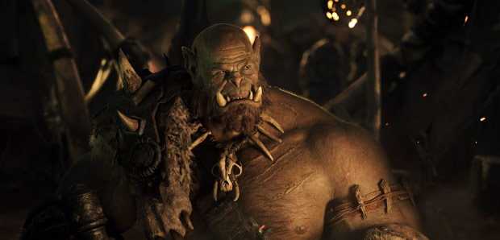
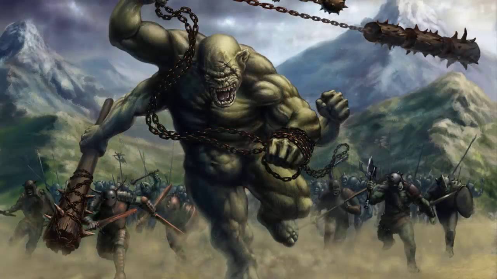

Pierwsi orkowie pojawili się w Śródziemiu w Dawnych Dniach, jeszcze przed zburzeniem Utumno. Ich pochodzenie jest kwestią sporną. Wg przekazów mędrców z Tol Eressei orkowie wywodzą się z elfów pojmanych przez sługi Morgotha krótko po przebudzeniu, zanim ci spotkali Oromego. Torturowani, więzieni i upodleni zostali zniewoleni wolą Czarnego Władcy, tak że służyli mu ze strachu, nienawidząc go w głębi czarnych serc.
Wg innych orkowie zostali stworzeni przez jednego z Valarów (czyli zapewne Morgotha) ze złości lub chęci zakpienia z Dzieci Iluvatara.Orkowie mieli wygląd humanoidalny, podobny do ludzi i elfów, z tą różnicą, że odznaczali się brzydotą oraz zdeformowanymi kształtami twarzy i ciała. Byli niżsi od ludzi, zgarbieni, pokraczni, krępi, barczyści, mieli krzywe nogi, płaskie nosy, skośne oczy i szerokie usta z krzywymi zębami. Odróżniali się między sobą wzrostem, tuszą, itp. Podobnie jak elfowie i ludzie dzielili się na wiele szczepów.

Gnieździli się najchętniej w skalnych jamach, które drążyli prawie tak uparcie jak krasnoludy, wyręczając się jednak niejednokrotnie jeńcami. Umieli się wspinać na drzew. Byli brudni i niedbali. Z chęcią wyrabiali przeróżne rodzaje broni i machiny. Najczęściej używali w bitwie szabli, toporów, krągłych tarcz i niewielkich łuków, do których strzały bywały nasączone trucizną. Ich ulubionym pożywieniem było mięso, niejednokrotnie podejrzanego pochodzenia. Znali też przynajmniej niektóre formy medycyny, jak maść na rany, a także produkowali trunek dodający energii.

Pozbawieni byli własnej woli. Walczyli w służbie Władców Ciemności ze strachu, chociaż nienawidzili swych panów w głębi czarnych serc. Co prawda zwłaszcza w TE pojawiły się niektóre szczepy, które próbowały się uniezależnić od Saurona ponieważ nie było już Morgotha takie plemiona mieszkały między innymi w Gundabadzie, Morii, Mieście goblinów, w górze Gram i w innych zakątkach na północy śródziemia. Nie znosili światła dziennego, które ich męczyło, dlatego poruszali się nocą, chyba, że Władca Ciemności nasłał ciemne chmury (jak w przypadku Bitwy na Polach Pellenoru). Wyjątek od tej reguły stanowili Uruk-hai z Isengardu i pół-orkowie. W ciemności poruszali się zwinnie i bardzo dobrze widzieli.